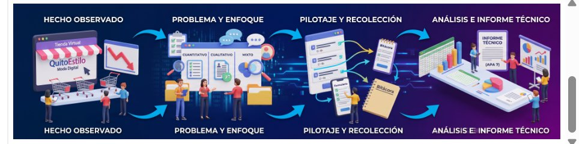

En esta primera etapa aprenderás a transformar necesidades comerciales reales en problemas investigables, diferenciando hechos comprobables de supuestos y seleccionando el enfoque metodológico adecuado bajo criterios éticos. Además, diseñarás y validarás instrumentos de recolección de datos digitales (cuestionarios, entrevistas y fichas de observación) mediante pruebas piloto documentadas sobre el caso práctico QuitoEstilo Moda Digital.
